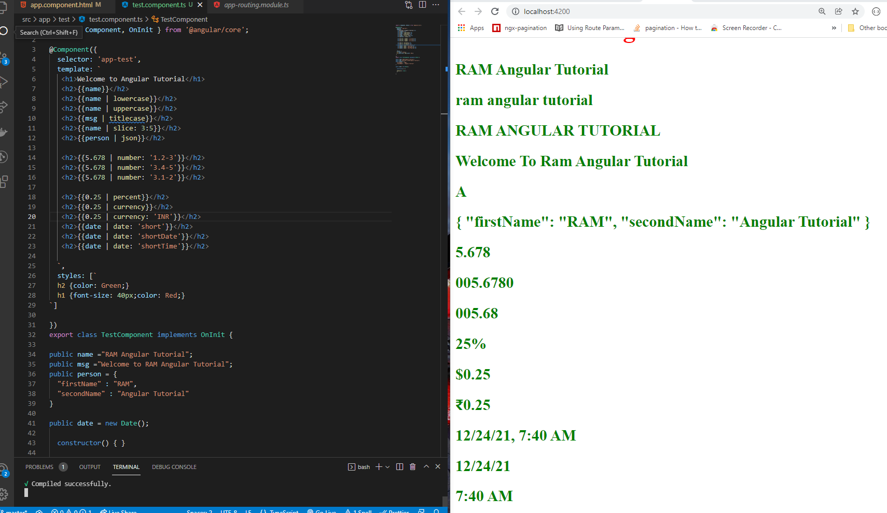

Pipes
- To transform the incoming stream of data into the required format before displaying in the View.
- The following are commonly used built-in pipes for data formatting:
- DatePipe: Formats a date value according to locale rules.
- UpperCasePipe: Transforms text to all upper case.
- LowerCasePipe: Transforms text to all lower case.
- CurrencyPipe: Transforms a number to a currency string, formatted according to locale rules.
- DecimalPipe: Transforms a number into a string with a decimal point, formatted according to locale rules.
- PercentPipe: Transforms a number to a percentage string, formatted according to locale rules.
- AsyncPipe: Unwraps a value from an asynchronous primitive.
- JsonPipe: Converts a value into its JSON-format representation. Useful for debugging.
- SlicePipe: Creates a new Array or String containing a subset (slice) of the elements.
